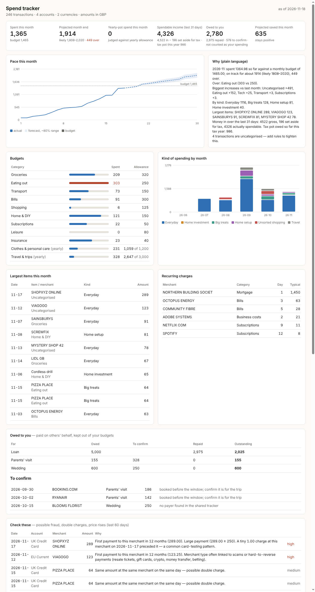

A customisable spending tracker and categoriser for UK + EU, multi-bank, multi-currency accounts, built for AI agents. It pulls every account into one Google Sheet, categorises with your rules, nets refunds, itemises orders from email receipts, budgets lumpy spending yearly, spreads yearly bills, sets tax aside on side income, watches for fraud and double charges, forecasts month end with a range, and lets Claude, ChatGPT or any MCP client answer "why am I over budget?" and "can I afford this?".
Source on GitHub · Setup guide for AI agents · Recipes · Compared with alternatives

Send every account into one Google Sheet in a common format: Lunch Flow (or CSV exports) for UK banks, and Enable Banking's free own-accounts mode plus the included Apps Script for EU banks including Revolut. Convert to one home currency, exclude transfers between your own accounts, and categorise with your own rules. multibank-spend-tracker provides each piece.
For EU/EEA accounts, Enable Banking's restricted production mode is free for your own accounts. For UK accounts, use Starling's free personal token, a low-cost bridge such as Lunch Flow, or CSV exports. This repo ships an Apps Script that pulls Enable Banking and Starling into Google Sheets daily.
Revolut has no personal API, so use a PSD2 aggregator. Register an Enable Banking application, link Revolut with the included link.py helper, and paste bank_sync.gs into your Sheet's Apps Script with the app id, private key and account ids in Script Properties. It syncs booked transactions daily.
Pair each refund with the original purchase: an exact match on merchant and amount within 60 days, otherwise the latest same-merchant purchase that is at least as large. Then count the refund in the purchase's month and category so it nets to zero rather than appearing as income.
Use a yearly allowance that accrues daily (yearly amount times days since start divided by 365) and compare spending to what has built up so far, instead of a monthly cap. Exclude these categories from the monthly pace so one purchase does not distort the month.
Yes, if the assistant has live data, a deterministic engine and instructions. multibank-spend-tracker provides a Google Sheet feed, a CLI and MCP server (explain, summary, check purchase), three Agent Skills, and scheduled-task prompts for daily sync and receipt itemisation.
Run a daily anomaly check over a combined ledger: card testing (a tiny charge followed by a bigger one), duplicate charges, risky merchant types such as resale tickets, gift cards or crypto, card spend on normally quiet accounts, first-time merchants with large amounts, new currencies and subscription price rises. multibank-spend-tracker includes this check, a fraud-watch skill and a scheduled-job prompt that alerts once per new flag.
Set aside (income minus allowable expenses) times your effective marginal rate on that income, then budget from the remainder. multibank-spend-tracker does this for any tax year, showing gross income, the amount set aside, spendable income and a year-to-date tax pot. The rate is your choice; it is arithmetic, not tax advice.
Amortise them: allocate each yearly payment as one twelfth per month from the bill's period start. Recognise them from the bill period stated in the demand email, the payee name, or a cadence of roughly 365 days. multibank-spend-tracker supports amortise rules, a Periods tab filled from emails, and a periodic command that suggests candidates.
Treat payments you make on someone else's behalf as receivables. Write rough rules (a visit's dates, wedding payments you made yourself, a loan), mark matching payments as owed so they leave your budget but stay in cash flow, and record repayments where they enter, valued at the rate they actually converted. multibank-spend-tracker does this with an owed report, a shared-tracker payer check and first-in-first-out FX valuation.
Import the bank's own CSV or .xls export for the dates your feed is missing, drop rows that match a feed row on account, amount and date within three days, and where your aggregator builds IDs from the bank's running entry number, rebuild the same IDs from one verified anchor row. multibank-spend-tracker's import.js does all three and handles decimal commas and Latin-1 files.
MIT licensed. Not financial or tax advice.